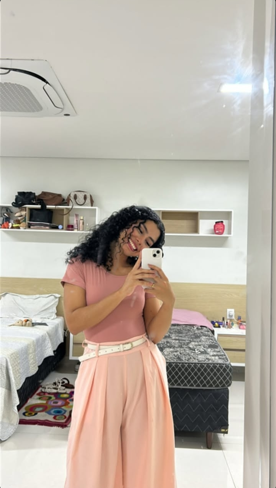

Psicologia clínica
Um espaço de escuta, cuidado e acolhimento
- Modalidades
- Presencial e online
- Contato
- WhatsApp e e-mail
Atendimento psicológico voltado a crianças, famílias e outras demandas, com a possibilidade de sessões online. Conheça o trabalho e entre em contato para conversar sobre como o acompanhamento pode ajudar.

01Sobre
Crislane Soares
Psicóloga Lacaniana.
- Registro profissional
- [CRP a informar]
- Formação
- [Formação acadêmica a informar]
- Abordagem
- [Abordagem teórica a informar]
02Área de atuação
Demandas atendidas
Alguns dos contextos em que o acompanhamento psicológico pode ser buscado.
-
Atendimento infantil
Acompanhamento de crianças, com participação e orientação da família ao longo do processo.
-
Autismo (TEA)
Acolhimento de crianças e famílias em demandas relacionadas ao Transtorno do Espectro Autista.
-
TOD
Acompanhamento de demandas relacionadas ao Transtorno Opositor Desafiador e ao manejo do comportamento.
-
Outras demandas
Questões emocionais e comportamentais diversas. [Lista a confirmar com a profissional]
03Atendimento online
Cuidado também a distância
Existe a possibilidade de realizar sessões online, por videochamada, para quem prefere ou precisa ser atendido sem deslocamento.
Plataforma utilizada e condições do atendimento online: [a definir com a profissional]
-
Entre em contato
Envie uma mensagem por WhatsApp ou e-mail.
-
Combine o atendimento
Dia, horário e condições são combinados diretamente com a profissional.
-
Sessão por vídeo
No horário combinado, a sessão acontece em um ambiente reservado, de onde você estiver.
04Localização
Onde fica o consultório
[Rua / Avenida e número] [Complemento / sala] [Bairro — Cidade / UF] [CEP]Informações de acesso, estacionamento e referências: [a informar]
05Contato
Vamos conversar?
Tem alguma dúvida ou deseja marcar uma consulta? Entre em contato por WhatsApp ou e-mail para combinar o atendimento.
- WhatsApp [Número a informar]
- E-mail [E-mail a informar]